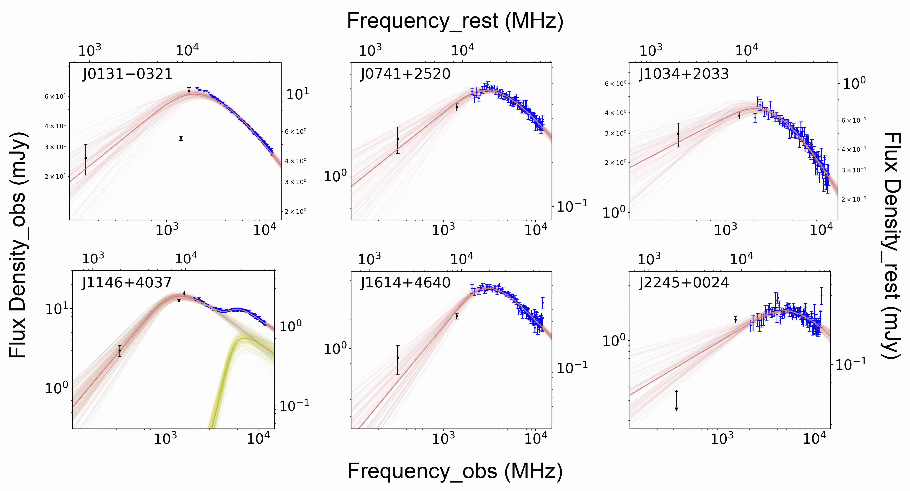

Millions of Active Galactic Nuclei (AGN) have been found by now over a very wide redshift range from the local Universe to z ~ 7. Among them, only ~ 10% are classified as radio-loud sources. The origin and evolution of radio emission is one of the biggest issues in the study of AGN. The onset of radio activity is often thought to be related to merger or accretion events in the host galaxy, which provide enough fuel to feed the central AGN. As a consequence, the radio emission evolves in a dense and possibly inhomogeneous ambient medium which can influence black hole growth at least in its early stages. The ideal targets to understand such problem are the young radio sources, whose radio lobes still reside within the innermost region of the host galaxy.
◈ The Radio Spectral Turnover of Radio-loud Quasars at z > 5 (Shao et al. 2020; Shao et al. 2021, submitted).
 Notes - The radio spectra.
◈ The star formation and environment with the JCMT and the ALMA (Shao et al. 2022 expected).
◈ The mas structure with the VLBA (Shao et al. 2022 expected).